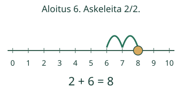
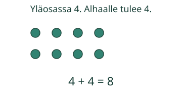
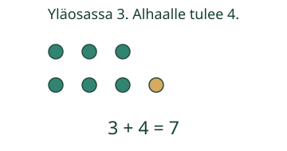

Pienet plussat tutuksi

Aavalla on 2 simpukkaa ja hän saa 6 lisää. Kokeile aloittaa kuutosesta: montako askelta tarvitset?
Miten tutusta laskusta saa apua?
2 + 6 = 6 + 2. Molemmat ovat 8. Kuutosesta riittää kaksi askelta: 7, 8. Kakkosesta tarvitaan kuusi. Vähempi askelmäärä ei vielä kerro, kuinka nopeasti joku ajattelee.

Tupla ja yksi lisää


5 + 0 = 5 ja 0 + 5 = 5. Nolla ei tuo yhtään lisää. Myös 0 + 0 = 0.
Uusi tilanne ja lisähaaste
Lammella on 3 sorsaa. Sinne ui 5 lisää. Montako on nyt? Voit ajatella 5 + 3. Kokeile sitten kahta eri laskua, joiden summa on 10. Miten ne liittyvät toisiinsa?
Lopuksi: Miten 4 + 4 voi auttaa laskussa 4 + 5?
Opettajalle ja ilman ruutua
Luokat 1–2. Pakollinen M-NUM-18; M-ADD-SUB-01 on vahva tuki, ei lisäportti. Tavoite on harjoitella kaikkia ei-negatiivisia summia enintään 10. Sivulla on 66 järjestettyä lukuparia, myös nolla kummallakin puolella. Ohjeet voi lukea aikuinen.
Kokoa nappiosat, vaihda järjestys ja näytä tuplaan lisättävä yksi. Harjoitelkaa samoja yhteyksiä myöhemmin uusissa tilanteissa. Oppija saa valita tavan eikä hänen tarvitse sanoa tulosta ääneen.
Sivu tarkistaa nykyisen numeerisen vastauksen. Se ei mittaa vastausaikaa, sujuvuutta, viivästettyä muistamista tai itsenäistä hallintaa. Malli ja vihje ovat tukea, eivät itsenäistä näyttöä. Ei henkilöhistoriaa tai formaalia pelihallintaa. Pelilinkit varmistetaan verkon kuoressa.